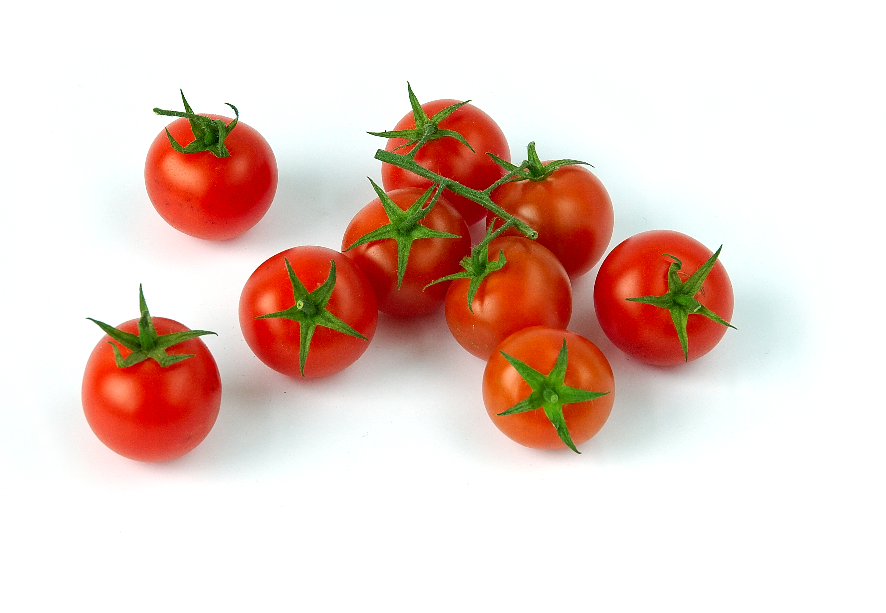

Cherry Tomato
Price: $9.99 per plant
Time: About 6-8 weeks until ripe
Difficulty: Easy
Brief Overview:
Cherry tomatoes range in size from a thumbtip up to the size of a golf ball, and can range from being spherical to slightly oblong in shape. They are very easy to grow and great for getting your garden started!
You'll need:
- 1 cherry tomato plant
- 1 tomato cage
- 1 20-quart bag of organic potting mix
- 1 bottle or bag of organic tomato food
- 1 5-gallon plastic food bucket
Basic Info:
- Sunlight: 8 hours
- Watering Frequency: 2-3 days
- Feeding Frequency: 1 week
Detailed Step-by-Step Guides:
Easiest Plant You'll Ever Grow Growing Toms on a BalconyDrag images of desired items to add to garden...